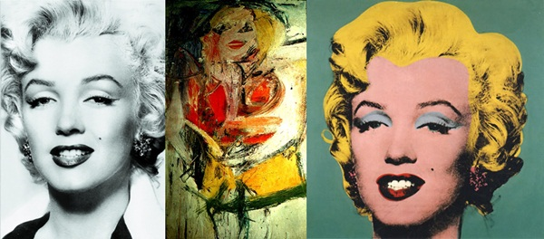
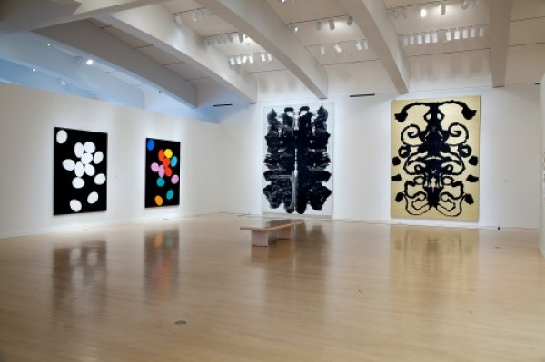
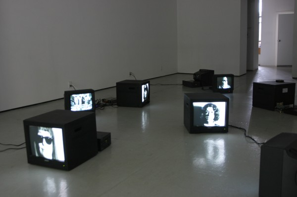
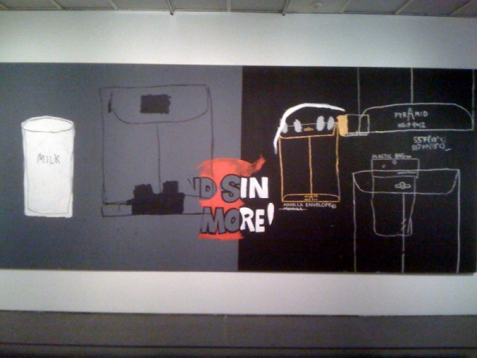

-
Warhol’s Late Expressionism
by Stephen Squibb October 1, 2010
One way of appreciating how elusive the descriptor ‘pop’ is when applied to art is to compare it to its corresponding use in describing music: ‘pop’ as in art is different than ‘pop’ as in music. In the latter case, what goes by the name of pop is literally that which is popular, which has a wide audience. Pop Art, on the other hand, refers to the importing of content that is already popular elsewhere, and that becomes significant by virtue of its appearance before the otherwise restricted audience of high art. Thus inscribed within the term ‘pop art’ is the very distance between the artworld and the rest of the social sphere that the historical avant-gardes had, theoretically, sought to collapse. Inscription is the key word here, especially with regard to Andy Warhol, whose early genius it was to be forever playing one side of this divide against the other, to better locate the edges of both.
On the one hand, Warhol’s pop is an obvious attack on art’s presumed autonomy, mocking its assertions of distance and difference from the everyday products of mass culture. This is clear in his Marilyn series, for example, which not only parodies De Kooning’s vision of the same subject, but actually diagrams its absorption into the larger riptide of images that dominates contemporary life. For all De Kooning’s presumptions to critical remove, Warhol seems to be saying, his Marilyn amounts to little more than a print with brighter colors. A similar claim is at work in his description, in his quasi-autobiography, of Bob Dylan as ‘the thinking man’s Elvis Presley.” Here too the pretentious one, shorn of his faith in his own splendid uniqueness, is reduced to the material reality of his position within the landscape of cultural production.
On the other hand, however, and somewhat paradoxically, Warhol’s own work clearly relies on that same distance to generate its own meaning. If, that is, there were truly no difference between the gallery and the supermarket, or the department store, say, it would be impossible to recognize the significance of Warhol’s nomination of these themes for consideration. What’s more, considered formally, his work is not simply interested in popular artifacts, but in the specific process by which they become popular. By representing the repetition, reproduction, and dissemination that transforms products – images, really – into icons, the artist restates the very distance he would deny Dylan and De Kooning. In a kind of parody, Warhol attempts to neuter art’s inevitable appropriation by anticipating it, opening a parallel space on the other side of the divide between representation and lived experience. The early work unfolds by refusing the incorruptible authenticity of a personal vision, insisting instead on its impossibility. Amidst a shabby sea of endlessly reiterated images, Warhol’s diagrams, schematics and dioramas are the negative imprint of art’s historical autonomy, framing its complicity. To this extent, Warhol is realistic.
To claim this artist for realism is in many ways questionable, and in any case complicated. Still, it does allow us to see in Warhol’s rejection of the dominant, abstract expressionism of his day a strange echo of the earlier refusal of classical expressionism, announced, most notably, by Georg Lukacs in Weimar Germany. Lukacs, writing in 1934, argues that:
As an opposition from a confused anarchistic and bohemian standpoint, expressionism was naturally more or less vigorously directed against the political right. And many expressionists and other writers who stood close to them took up a more or less explicit left-wing position in politics… But however honest the subjective intention behind this may well have been in many cases, the abstract distortion of basic questions, and especially the abstract “anti-middle-classness,” was a tendency that, precisely because it separated the critique of middle-classness from… the economic understanding of the capitalist system… could easily collapse into its opposite extreme: into a critique of “middle-classness” from the right, the same demagogic critique of capitalism to which fascism later owed at least part of its mass basis….
Remarkable about this passage is the extent to which it foreshadows similar, latter-day complaints about AbEx, albeit in a different political idiom. Here is Eve Cockcroft, writing in Artforum in 1974:
The alleged separation of art and politics proclaimed throughout the ‘free world’ with the resurgence of abstraction after World War II was part of a general tendency… By giving their painting an individualist emphasis and eliminating recognizable subject matter, the Abstract Expressionists succeeded in creating an important new art movement. They also contributed, whether they knew it or not, to a purely political phenomenon – the supposed divorce between art and politics which so perfectly served America’s needs in the cold war.
Cockcroft is referring, of course, to the CIA funded, “New American Painting” show that toured Eastern Europe as an example of America’s cultural superiority. Though it would certainly be a mistake to read into Warhol a properly political motivation for his implicit critique of AbEx, it is difficult to miss his focus on the ‘economic system’ that Lukacs found lacking in the movement’s earlier appearance, once we adjust for that system’s evolution. Indeed, it is difficult to imagine a more ruthless assault on expressionist subjectivism than the one pursued by Andy Warhol in the 1960’s. That he could do this without making common cause with the historical, hard-left antagonism says a great deal more about his cultural moment than it does about any political incapacity on his part.
Another way of making the same point would be to note that Guy Debord published The Society of the Spectacle six years after Warhol’s first solo show. It might as well have been a catalog essay; so effectively did the artist illuminate the ‘social relation between people, mediated by images’ that was the centerpiece of Debord’s critique. The terrain of realism had changed, even if that of expressionism had not.
What then to make of Warhol’s late work? Of his return to hand painting and abstraction? This is the implicit question posed by Andy Warhol: The Last Decade, organized by the Milwaukee Art Museum that closed at the Brooklyn last month. The show is the first survey of the artist’s final years, and, at first glance, the reasons for this delay are clear: the work simply isn’t very compelling. The best pieces are the collaborations with Basquiat and even these feel like limited iterations of that artist’s more successful canvases. When considered against the rest of Warhol’s output however, these works offer an illuminating counterpoint to the process-without-a-subject that produced his earlier, signature pieces. It’s almost as though Warhol had to construct a parallel identity within the field of representation itself before expression became a possibility.
Inside the gallery, Warhol relentlessly pursued his own erasure, presenting installation after installation that testified to the impotence of the artistic gesture. If this amounted to its own kind of intervention, it was only by virtue of its absolute embrace of the new spectacular reality. Fine, we’ve covered this. In his films, however, Warhol took an apparently opposite tack. By choosing individuals he found fascinating, and placing them on screen, he was experimenting with the raw material of an individual identity. What of a person survives the translation to the screen, the shift from quotidian existence to moving image? Conrad Ventur, in a show earlier this summer at Momenta Art, dramatized this question by recreating Warhol’s early screen tests with the same ‘superstars,’ all now significantly older. Running on TV screens scattered around the floor of the gallery, the videos marked the distance between Warhol’s moment and our own. Melancholic and quiet, the videos are absent the youth that had intrigued the artist in the first place, calling attention to what sort of industry it was, exactly, that his factory was creating. As if to underscore the point, Ventur includes looping videos of the songs that played on repeat as the originals were being made.
Warhol’s superstars were scouts, sent ahead of his own person into the slipstream of images whose circulation fascinated him. That so many of these stars did not survive, either literally or figuratively, only bolstered his own efforts to fashion a public existence in perfect congruence with the image-operation that was his favorite subject. Warhol’s many writings in which he presents himself, again channeling Debord, as alienation perfected are not so much a lie, as his friends occasionally claimed, as an attempt to embody the truth of fame itself. “If you want to know all about Andy Warhol,” he declared, “just look at the surface of my paintings and films and me, and there I am. There’s nothing behind it.” This, it is important to remember, is demonstrably false – there was a person, Warhol, who was not reducible to his myriad surfaces, no one is, people are not images. Yet, and here is Warhol’s point, images are all we have of anyone encountered via the mechanisms of the culture industry. Thus the problem with the abstract expressionists was not that they were inauthentic; it’s just that authenticity is not an option. And a commitment to this failed strategy on the part of the big men betrayed a pitiable naiveté about the gulf between their persons and the images that played them on TV, or in magazines, or anywhere, really, that they happened to appear. It was this gulf that Warhol highlighted by appearing only on the far side; a performance of transparency which is, by the terms provisioned by the age, technically impossible, and this impossibility feeds back into the man, returning him the agency his predecessors didn’t know they’d given up. Though they’d thought themselves abstract expressionists, the world knew only abstracted expression, and it is there, at that level and with that knowledge, that Warhol’s work begins.
Warhol’s late forays into abstraction, then, are not all his in the way that Pollack became his splatter or Rothko dissolved into his colors. It was Warhol’s image, his personae, carefully constructed over decades that could now express itself, when there was, at last, no danger of distortion. By religiously refusing to be anything for everyone other than the distilled form of what anything inevitably is, insofar as it is for everyone, Warhol reconstructed a subject on the other side of capital, and it was this that he indulged.
Consider his Oxidation Painting (in 12 parts) from 1978, where, by urinating on the canvas, Warhol demonstrates the impossibility of his own appearance, as his excrement arrives as simply a distortion of metallic paint. The eventual oxidation rehearses, for a second time, the movement of abstraction. When Basquiat painted over Warhol’s silkscreens, expression(ism )is revealed, at bottom, to be merely the embellishment of an already circulating structure, a window treatment on the reified edifice of a tele-visual age.
As always with an artist known for his feints and his diversions, there is a risk in filling up the empty space of his intentions with a corresponding excess of conceptual strategy. To claim, as I have done, that the artist’s late expressionism is not a detour from his early trajectory, but rather its completion – as Warhol’s avatar of pure surface is at last allowed to speak, painting by hand what before he’d produced by automation, for example – is in many ways to violate his own injunction, reaching for a coherence and a depth which he maintained was unavailable. But unavailable for whom? Warhol’s claim was never that depth did not exist, only that it was not available to artists, to the image makers, in the way they might have liked. At the level of reception, on the other hand, a certain depth is required of us if we’re to understand what he was trying to say with his immaculate topography of our remediated silence.